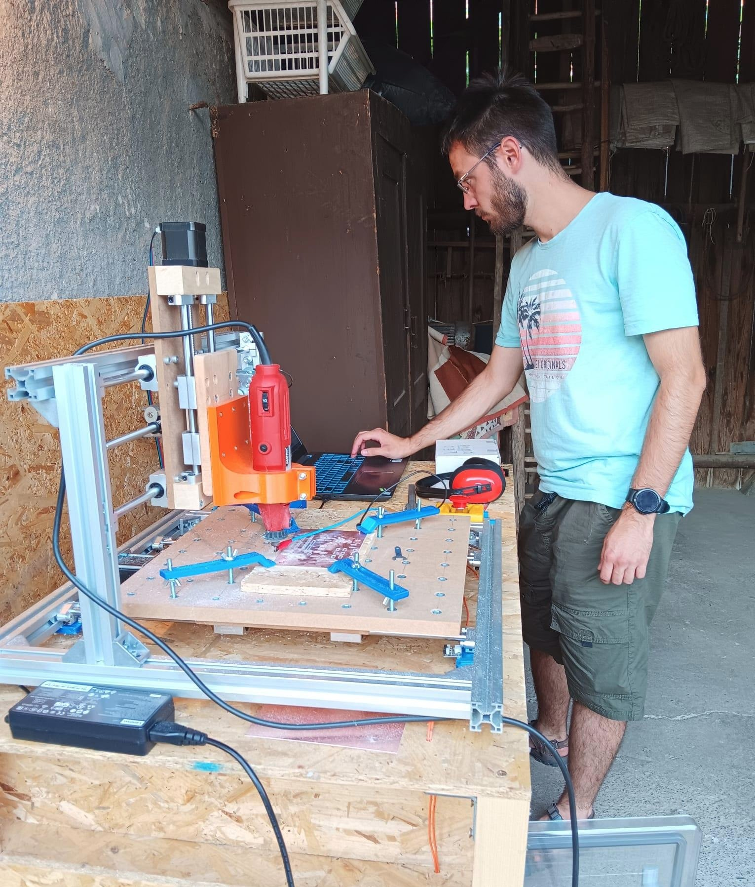
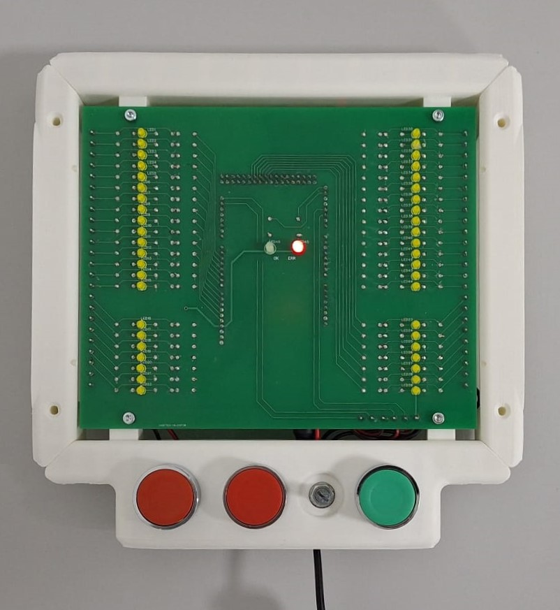
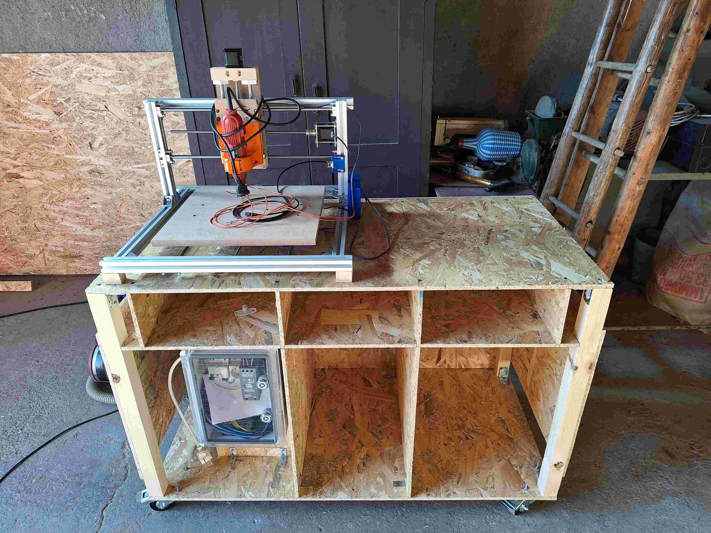
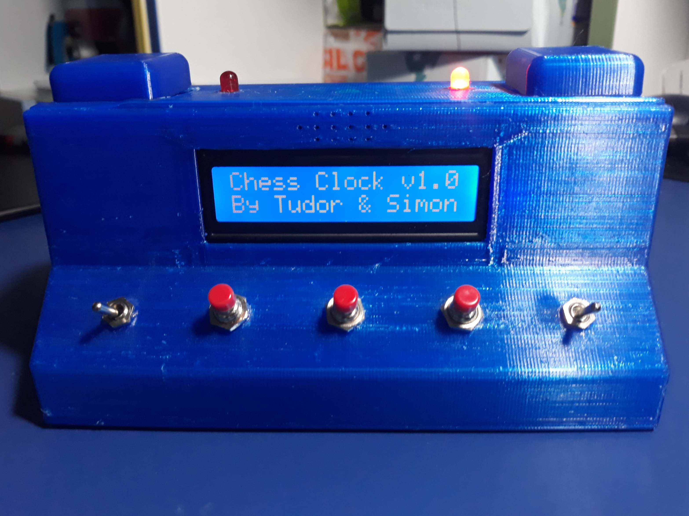
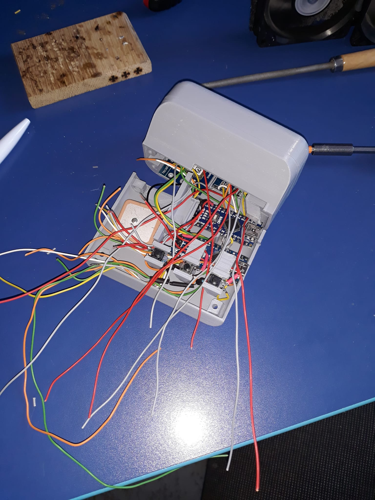

Tudor's projects
Tinkering, designing, building, and so on, I like doing stuff. Here you can find some projects that I worked on

Cable tester
A teacher of mine proposed a project that, if successful, would be used
in a cable factory. The main goal of the project is a cable tester that
can detect wrong wiring of a cable. While the requirements are modest,
the benefit of such a device in a factory is significant.

CNC Milling machine
In any electrical engineering project the PCB is a pretty significant component. So it is important for me to be able to make them fast and reliable. Shipping times from China were longer when I started working on this project, so I tried to implement a local production method. Behold the PCB milling machine!

Signal generator
The most interesting subject in my first year of uni was "Electronic Devices", where we learned about really useful circuits containing resistors, capacitors, diodes and the almighty operational amplifier. We would test these circuits in the lab, once per week, but my colleague Darian and I wanted to test new circuits more often. A signal generator is what was missing, so we tried to make a crude ourselves.

Chess Clock
My friend Simon had the idea of building a chess clock. So we did.

Tricorder
I am a star trek fan.
The most star trek related project I could work on is a fully functional tricorder.
A tricorder is a device with many sensors installed (air temperature, air pressure, GPS position, ...),
capable of fitting in a single hand and display collected data without the use of an external display
